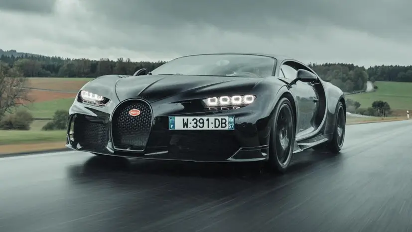
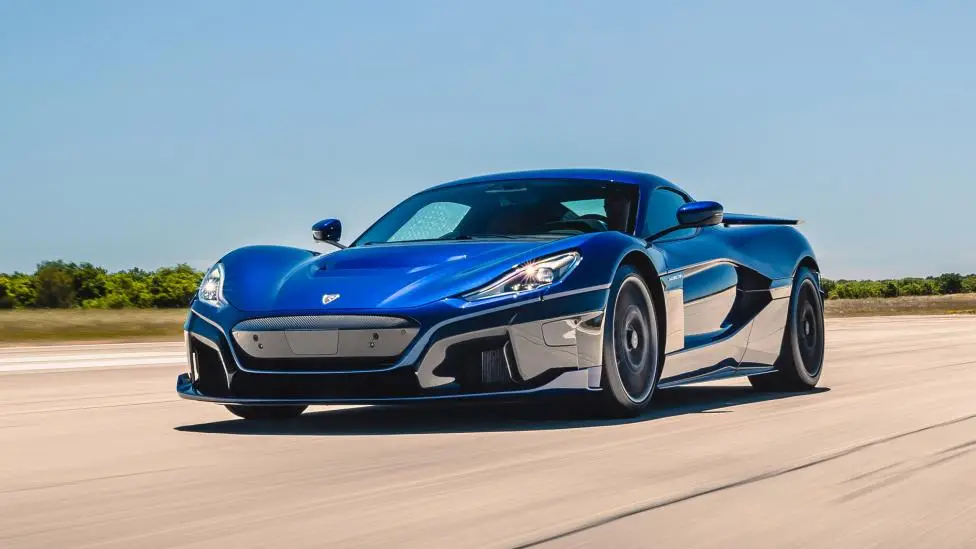
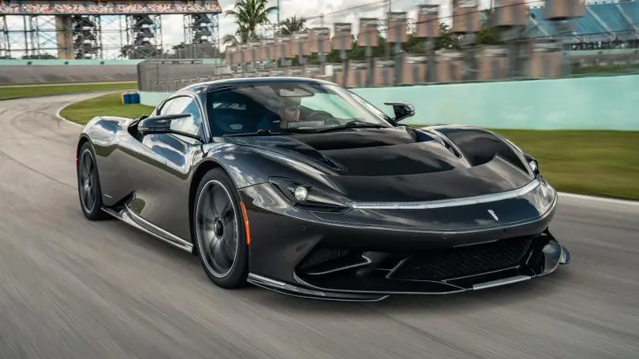

| HOME | REGISTER | MODELS | ABOUT US | CONTACT |
| Bugatti Chiron Super Sport Behold: the world’s fastest production car.Yep, the go-faster Super Sport is based on the Bugatti Chiron that Andy Wallace piloted to 304.773mph back in 2019, and features an 8.0-litre quad-turbo V16 producing an extra 100bhp over the standard Chiron. All in, that’s 1,578bhp at your disposal. In fact, there’s just one difference to the Chiron which smashed the 300mph barrier – the top speed has been limited to a mere 273mph. |
 |
|---|---|
| Rimac Nevera “The Nevera is astonishingly fast. Fast in a way that’s tricky to put into words, either while you’re sitting in it trying to process what the hell is happening to your mind, body and soul when you nail the throttle, or a few days later writing about it,” wrote Jason Barlow when he got the call to test drive the Rimac Nevera in Croatia last year. So allow us to hit you with some numbers instead: courtesy of a 120kWh battery, four motors driving each wheel individually, and a power output equivalent to 1,914bhp and 1,740lb ft of torque, Mate Rimac’s hypercar is capable of 0-60mph in 1.85 seconds, 100mph in 4.3secs, and 186mph in 9.3secs – on to a 258mph max. |
 |
| Pininfarina Battista Meet the sister car to the Rimac Nevera. It’s based around the same powertrain technology, electrical architecture and carbon core (Rimac supplies the internal gubbins), but wears an Italian frock of Pininfarina design. Worried about charging? No drama, Pininfarina has agreed a deal with ChargePoint, meaning free charging for five years. Which means, theoretically, if you get enough miles under your belt, you could break even on the £2m purchase price. |
 |
| SLNO | RANK | NAME |
|---|---|---|